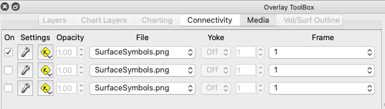

- On: Enables display of image in the layer
- Wrench: Unused at this time
- Contstruction: Edits layers (add/remove/etc)
- Opacity: Disabled at this time but may by used for image transparency
- File: Selects media file
- Yoke: Unused at this time
- Index: Index of frame
- Name: Name of frame